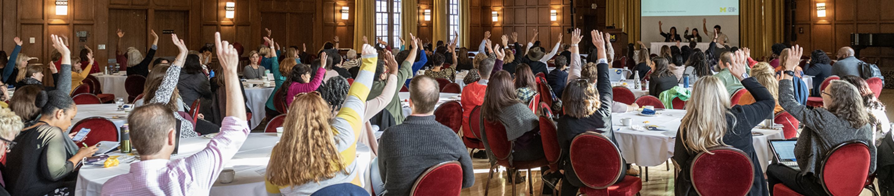

CEW+ Annual Advocacy Symposium
 SAVE THE DATE for the 2024 CEW+ Advocacy Symposium on Thursday, September 26 at the Michigan League!CEW+ annually brings together staff, faculty, students, and community members to create change
through introspection, dialogue, and action at our advocacy symposium. The goal is to give
participants practical tools to better advocate for themselves and others. CEW+ seeks to encourage
attendees to think about the many ways in which we can be activists as well as how we can support
others in navigating the current systems that impact their life. Attendees are exposed to various
approaches to advocacy and engage in self-reflection, group discussion, and action-planning to
advance their ability to advocate for themselves, others, and on behalf of causes central to their
professional and personal goals. U-M staff have comprised the majority of participants averaging
slightly under 60% over the past two years. Faculty, community members, and students comprise the
remainder of the audience.
The advocacy symposium features a keynote lecture from a nationally or internationally renowned
advocate, a capstone presentation by the outgoing Twink Frey Visiting Social Activist, and the
introduction of the next activist. Attendees participate in workshops and roundtable discussions
that highlight relevant U-M resources, offer professional development skill-building, and showcase
the advocacy journeys of diverse speakers. The event intends to spark further engagement with the
work of the Center and provide opportunities for early-career and more experienced advocates to
share and learn from each other’s unique experiences.
Twink Frey Visiting Social Activist Program
The Twink Frey Visiting Social Activist (TFVSA) Program brings to CEW+ a social justice activist whose work affects women and recognizes gender equity issues. One goal of the program is to build the capacity and effectiveness of social activists. This is accomplished by giving the TFVSA time, space, and support to work on a project that would not be possible under the activist’s usual working circumstances. The program is made possible through a generous gift from U-M alumna and Emerita Leadership Council Member Twink Frey.
Christobel Kotelawela Weerasinghe Lecture
The Weerasinghe Lecture is named for Christobel Kotelawela Weerasinghe, who worked to promote international understanding and communication throughout her life. Weerasinghe was a representative from 1956-to 1965 at the United Nations for the World Federation of the United Nations Association in New York. She traveled and spoke widely on behalf of the UN Association. She published several books for children, was an active member of Women Geographers in Washington and served on several not-for-profit boards in Sri Lanka, where she resided until her passing in 2018. The lectureship brings international advocates to CEW+, in collaboration with other units, for cross-cultural dialogue about the advancement of women. The lectureship is made possible through a generous gift from U-M alumna and Emerita Leadership Council Member Menakka Bailey in honor of her mother, Christobel Kotelawela Weerasinghe.